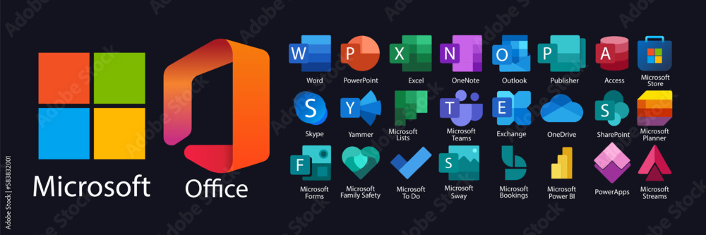

Fundada por Bill Gates e Paul Allen em 1975, a Microssoft tem como missão capacitar pessoas e organizações ao redor do mundo para alcançar seu potencial máximo através da inovação tecnológica. Nossa visão é de criar soluções que impactem positivamente a vida de bilhões de pessoas ao redor do mundo, promovendo inclusão e acessibilidade digital.Dada a sua origem modesta como uma startup ambiciosa no setor ainda pouco desenvolvido de computação pessoal, a Microssoft começou com poucos colaboradores. Ao longo do tempo a empresa se consolidou como uma das gigantes da indústria de tecnologia e hoje emprega centenas de milhares de pessoas em todo o mundo, com escritórios e centros de pesquisa em diversos países.O caminho para a expansão da Microssoft se deve pela liderança no desenvolvimento de sistemas operacionais, como o Windows, que revolucionaram a computação pessoal. Além disso, a empresa diversificou seus produtor e serviços, incluindo em seu postfólio softwares de produtividade, como o Office, soluções empresariais, inovações em inteligência artificial e até mesmo no mundo dos video-games, com o XBox.Com o passar do tempo, a MIcrossoft não apenas de consolidou como uma das empresas mais valiosas do mundo, mas também como um exemplo de como a tecnologia pode transforma a sociedade quando unida com valores como integridade, respeito e excelência.
A Microssoft possui um extenso e extremamente variado portfólio de produtos e serviços, que inclui desde sistemas operacionais, como o Windows, plataformas de produtividade como o Microssoft Office, soluções para computação em nuvem como o Microssoft Azure, video-games com o XBox, entre outros.Seus diferenciais no mercado incluem a integração e compatibilidade entre seus produtos, permitindo uma experiência completa e flúida para seus clientes, a empresa também é referência em inovação contínua, mantendo atualizações constantes em seus produtos, fazendo melhorias e adicionando novas funcionalidades, mantendo-se sempre na vanguarda da tecnologia mundial.Seu público alvo é extremamente variado, abrangendo desde consumidores individuais até grandes corporações, oferecendo soluções adaptadas às necessidades específicas de cada segmento.
A Microssoft adota um fluxo comunicacional diversificado, combinando tanto a comunicação vertical descendente, que ocorre dos líderes para os funcionários, quanto a horizontal, facilitando a troca de informações entre setores e equipes. Além disso, a empresa valoriza a comunicação informal, que promove um ambiente de trabalho colaborativo e inovador.Quanto aos canais de comunicação, internamente a empresa utiliza ferramentas como intranet, e-mails corporativos, plataformas de mensagens instantâneas como o Microssoft Teams, além de reuniões presenciais e virtuais. Externamente, a empresa se comunica através de seu site oficial, redes sociais e eventos corporativos.Entre os problemas comunicacionais identificados na empresa, destacam-se possíveis falhas na comunicação vertical ascendente, onde os funcionários sentem dificuldade em fornecer feedbacks e sugestões para seus gestores. Além disso, dado ao tamanho da empresa e a quantidade de equipes diferentes, trabalhando nos mais variados tipos de funções e projetos, a sobrecarga de informações pode ser um desafio, dificultando a priorização e compreensão das mensagens.Algumas das estratégias que poderiam ser utilizadas para sanar este problema, seriam implementar a promoção de uma cultura de comunicação aberta e incentivo a feedbacks, através de canais formais e informais, e investir em tecnologias que facilitem a gestão e organização de informações, para otimizar o gerenciamente de uma grande quantidade de informações.Desta maneira, a Microssoft se destaca, não somente pelo seu portfólio tecnológico, mas também pela eficácia de sua comunicação empresarial, que é fundamental para se manter como líder mundial no mercado de tecnologia
A Microssoft na China está implementando uma nova política de segurança que requer que seus funcionários usem iPhones para autenticar sua entrada nos sistemas corporativos, tal autenticação não está disponível para dispositivos android. A medida, que entra em vigor em setembro, visa mitigar potenciais ameaças cibernéticas associadas ao uso de hardware e aplicativos locais. A empresa garantirá que todos os funcionários tenham acesso aos dispositivos necessários para cumprir com as novas diretrizes, incluindo o fornecimento do iPhone 15 para todos os colaboradores que ainda não possuem. Essa iniciativa faz parte do compromisso contínuo da Microssoft com a segurança cibernética, no âmbito de seu programa "Secure Future Initiative", enquanto mantém vigilância rigorosa sobre suas operações na China para proteger seus sitemas corporativos contra acessos não autorizados.